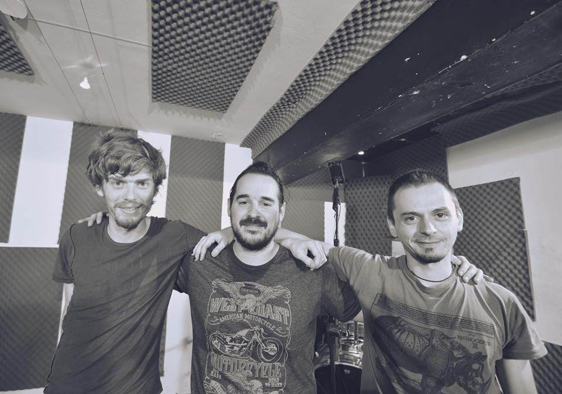

MYLCC
-
1. Oeste
A no ser que la luz me quiera dejar solo con el mar. Ohhh Ohhh Ohhh A no ser que la luz me quiera dejar solo sin estar. Ohhh no puede ser así. Un montón de colores viene hacia mí en forma de montañas y algo más. Ohhh estaré mejor aquí.Grabado en Estudios Marfil.
-
2. Nada es Perfecto
Hoy, puede que camine con la piel mi voz, no se va a notar, quieren más... Y que la sangre caiga en su alimento, por disimular, dónde están los que iban a venir tan pronto. Quieren libertad de esa que no hay, que la piel sea plástica visión. Tal vez mañana no recuerden el problema de hoy, y para mí llega, va a llegar. Tal vez mañana no recuerden lo que tengan que hacer, y para mí llega, va a llegar. Debajo del árbol puede haber, ya no hay más nada. Que se vayan, que no vuelvan más, que nunca regresen, que solo el tiempo está. Que se vayan, que no vuelvan más, que nunca regresen, que solo el tiempo está. Que se vayan, que no vuelvan más, que nunca regresen, que solo el tiempo está. -
3. Caída Libre
Desatándonos, soltando lo que era uno. Rompiéndonos del pasado. La arteria que nos fundía se secó para no volver, y esperas que de algún modo puedas volver a caer. Oxidándonos, desnudos por separado, mineral que se desprende de su fuente. Si todo lo que nos queda se fuera a reventar, si no sabes cómo, puedes volver a caer. Recordándonos, derrotando un poco al tiempo. Nostalgia que mantiene vivo lo que ha muerto. Espero escaparme de este lugar, si no logro cómo, tendré que volver a caer. Es la hora y te solté la mano, es momento de que el viento traslade el amor. Nuestra unión ha cambiado para siempre. -
4. Liberanos
Agua que de agua cuelga, solo el río sabe cómo llegar. Noche que es laguna, sin luna, solo el río sabe cómo, que puedas progresar. Agua, libéranos del mal, -
5. Buda Mono
Tanta medicina, tanta vitamina, mira, mono buda va a bostezar. Sobre la colina busca parafina, mira, mono buda va a despegar. De un salto mortal va a evolucionar, mono buda, intento del mal. Como en la cocina, ama a su vecina, mira, mono buda, exento del mal. En la esquina universal busca un sol que devorar..
Imágenes del Álbum
